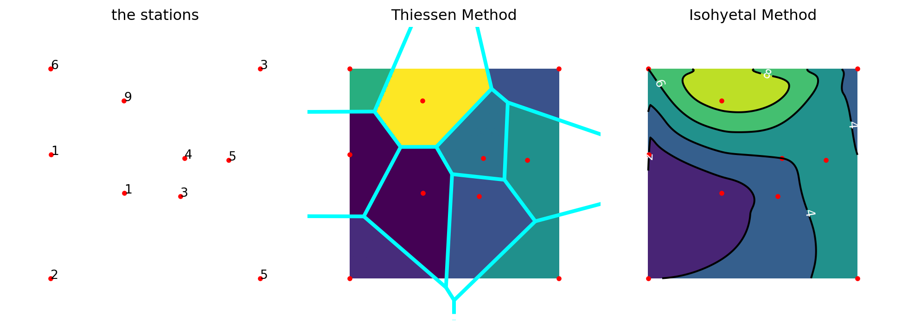

{kind=link}
import matplotlib.pyplot as plt
import numpy as np
from scipy.interpolate import griddata
from scipy.spatial import Voronoi, voronoi_plot_2d, ConvexHull
fig, ax = plt.subplots(1, 3, figsize=(10,7))
fig.subplots_adjust(left=0.0, right=1.0, top=0.96, bottom=0.05,
hspace=0.02, wspace=0.02)
N = 6
PI = '3141592653589793'
points = np.random.rand(N, 2)
points = np.vstack([points,[0,0], [0,1], [1,0], [1,1]])
values = np.array([int(x) for x in list(PI)])[:(N+4)]
# values = np.array([3, 1, 4, 1, 5, 9, 2, 6, 5, 3])
grid_x, grid_y = np.mgrid[0:1:100j, 0:1:200j]
grid_z_nearest = griddata(points, values, (grid_x, grid_y), method='nearest')
grid_z_cubic = griddata(points, values, (grid_x, grid_y), method='cubic')
ax[0].plot(points[:,0], points[:,1], 'o', ms=3, markerfacecolor="red", markeredgecolor="red")
ax[0].set_aspect('equal', 'box')
ax[0].set(xlim=[0,1], ylim=[0,1])
ax[0].set_title("the stations")
for i, v in enumerate(values):
ax[0].text(points[i,0], points[i,1], str(v))
ax[1].imshow(grid_z_nearest.T, extent=(0,1,0,1), origin='lower')
ax[1].plot(points[:,0], points[:,1], 'o', ms=3, markerfacecolor="red", markeredgecolor="red")
vor = Voronoi(points)
voronoi_plot_2d(vor, show_vertices=False, line_colors='cyan',
line_width=3, line_alpha=1, point_size=0, ax=ax[1])
ax[1].set_title("Thiessen Method")
ax[2].plot(points[:,0], points[:,1], 'o', ms=3, markerfacecolor="red", markeredgecolor="red")
nlines = int((values.max()-values.min()+1)/2)
ax[2].contourf(grid_x, grid_y, grid_z_cubic, nlines)
cont = ax[2].contour(grid_x, grid_y, grid_z_cubic, nlines, colors="black")
ax[2].clabel(cont, inline=1, colors='white', fmt='%.0f')
ax[2].set_title("Isohyetal Method")
for i, a in enumerate(ax):
a.set(xlim=[-0.2,1.2], ylim=[-0.2,1.2])
a.axis('off')
a.set_aspect('equal', 'box')
fig.savefig("spatial-distribution.png", dpi=500)